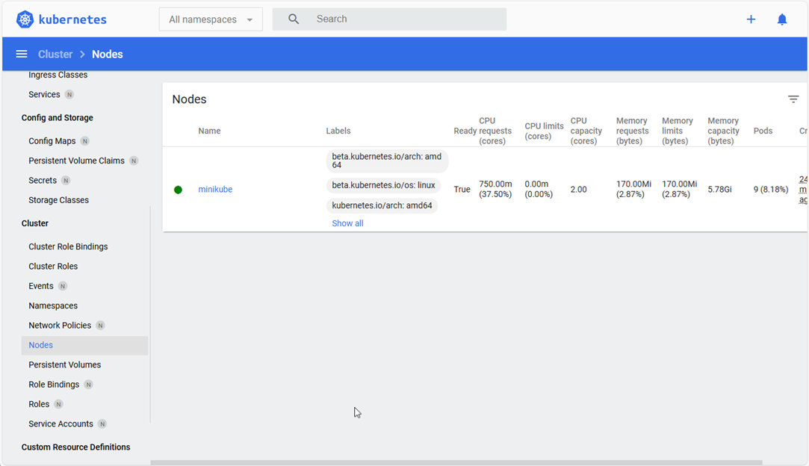
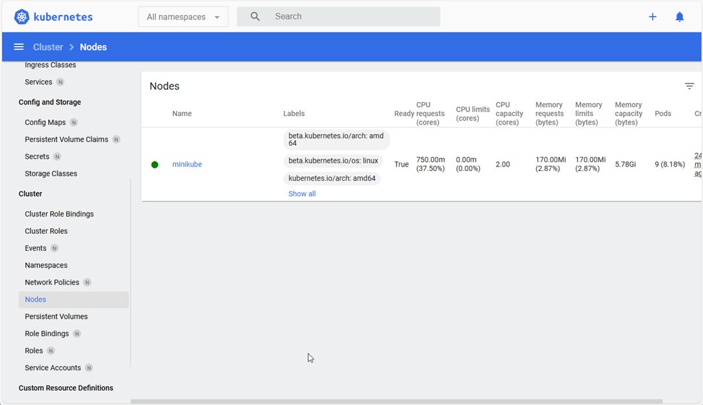

02 install minikube
Your First Tiny Kubernetes Cluster (Local on Your Computer)¶
Now that we understand the big picture (containers + the pizza chain manager), let’s see Kubernetes in action.
We are going to create a tiny Kubernetes cluster right on your own computer.
It’s safe, free, and only takes just a few minutes to install.
What we will do (in very simple steps)¶
- Install a tool called Minikube (it creates a fake "single restaurant" Kubernetes cluster on your laptop)
- Start the cluster with one command
- Check that it’s alive with another command
- See the dashboard, a pretty web page that shows what’s happening
That’s it for this part. No containers or apps yet, just making sure the "head office" is open.
Step 1: Install Minikube¶
Minikube is the easiest way for beginners to try Kubernetes locally.
a. Choose your operating system:¶
Run the following commands, based on your OS (Windows/Mac/Linux)
Windows¶
Easiest: Install Chocolatey (package manager) first if you don’t have it: 1. Open PowerShell as Administrator (right-click → Run as administrator)
-
Install Chocolatey (one-time, if not already installed):
Set-ExecutionPolicy Bypass -Scope Process -Force [System.Net.ServicePointManager]::SecurityProtocol = [System.Net.ServicePointManager]::SecurityProtocol -bor 3072; iex ((New-Object System.Net.WebClient).DownloadString('https://community.chocolatey.org/install.ps1')) -
Then install Minikube:
choco install minikube
macOS¶
- With Homebrew (recommended):
brew install minikube
Linux¶
- Quick one-liner (most common distributions):
curl -LO https://storage.googleapis.com/minikube/releases/latest/minikube-linux-amd64 sudo install minikube-linux-amd64 /usr/local/bin/minikube && rm minikube-linux-amd64
b. Windows/macOS/Linux¶
After installing, run the following command to verify that Minikube has been installed, and check the version:
minikube version
Note: (If you run into issues, search “install minikube [your OS]” official docs are very good.)
Step 2: Start your tiny cluster¶
Open a terminal (PowerShell on Windows, Terminal on macOS/Linux) and run the following command:
minikube start
- This downloads a small virtual machine + Kubernetes components (first time takes 2–5 minutes)
- After that it usually starts in ~30 seconds
- You should see output similar to the following:
minikube v1.34.0 on Microsoft Windows 11 Home Single Language 10.0.26100 Using the docker driver based on user configuration Starting control plane node minikube in cluster minikube Creating docker container (CPUs=2, Memory=2200MB) ... Preparing Kubernetes v1.31.0 on Docker 24.0.9 ... Verifying Kubernetes components... Done! kubectl is now configured to use "minikube" cluster```
Congratulations! You now have a real (tiny) Kubernetes cluster running on your computer.
Step 3: Check that it’s alive¶
Now that Minikube is installed, we want to check that it is running Run the following command:
kubectl get nodes
You should see something like:
NAME STATUS ROLES AGE VERSION
minikube Ready control-plane 2m30s v1.31.0
- This means: "Show me all the restaurants (nodes) in the pizza chain"
- You have one restaurant called minikube and it’s Ready (healthy)
Optional: See a pretty dashboard¶
-
If you want to see the Kubernetes browser dashboard, run the following bash command:
minikube dashboard -
This opens a web browser showing the Kubernetes dashboard
-
You’ll see graphs, lists of things running (right now almost nothing), and a nice visual of your tiny cluster

-
Close the browser tab when done, the dashboard keeps running in the background until you stop Minikube.

{kind=link}
{kind=link}
Clean up (when you’re done playing)¶
-
To stop the cluster run this Bash Command (saves CPU/RAM):
minikube stop -
To delete it completely (start fresh next time):
minikube delete
What we achieved¶
- We turned your computer into a real Kubernetes cluster (even if just one node)
- We used kubectl the main command-line tool to talk to Kubernetes
- We proved the "head office" is listening
Next time we will actually deploy our first pizza (run a simple container inside this cluster).